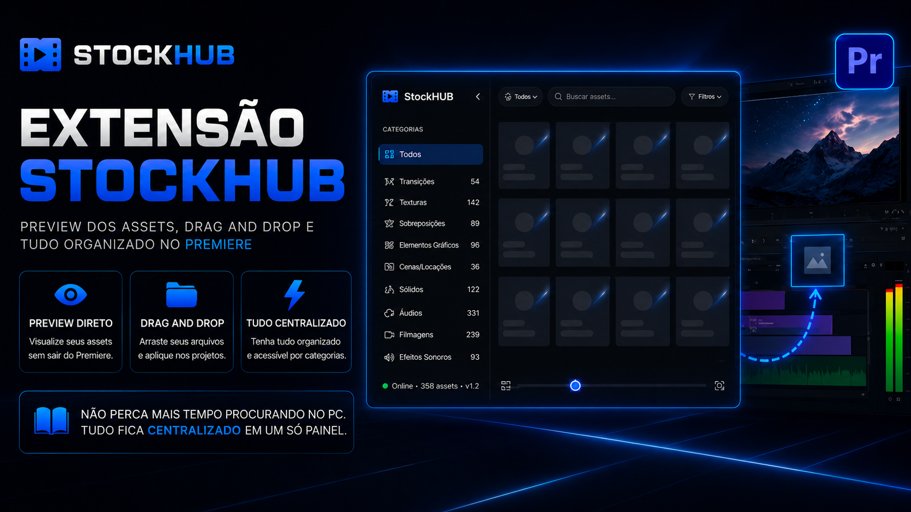

@luisousa_

Produtos

Sobre mim
Sou Luis Sousa, editor de vídeos há mais de 5 anos. Trabalho na maior empresa de IA do Brasil - e foi lá, conversando com quem mais entende do assunto, que minha forma de trabalhar mudou completamente.
Comecei a enxergar padrões que sempre estiveram na edição, mas que ninguém havia transformado em processo. Mergulhei em marketing, depois em programação - não por modismo, mas porque era a única forma de construir o que eu precisava.
Hoje crio ferramentas que nascem da rotina real de um editor. O StockHub foi a primeira. Não vai ser a última.
Me Siga